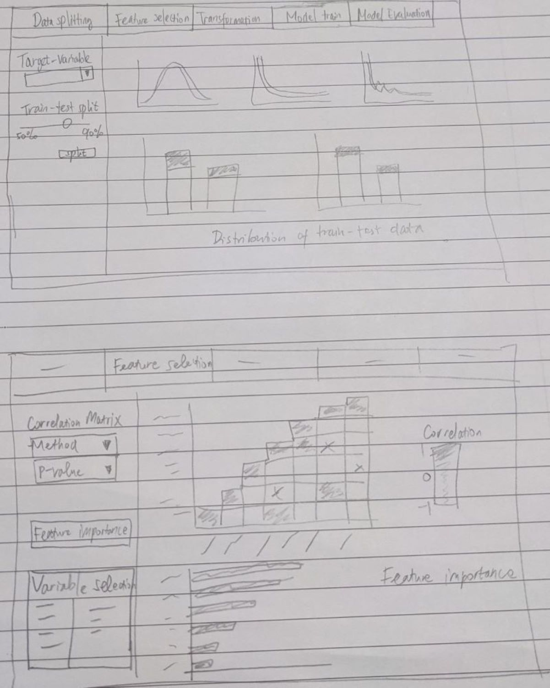
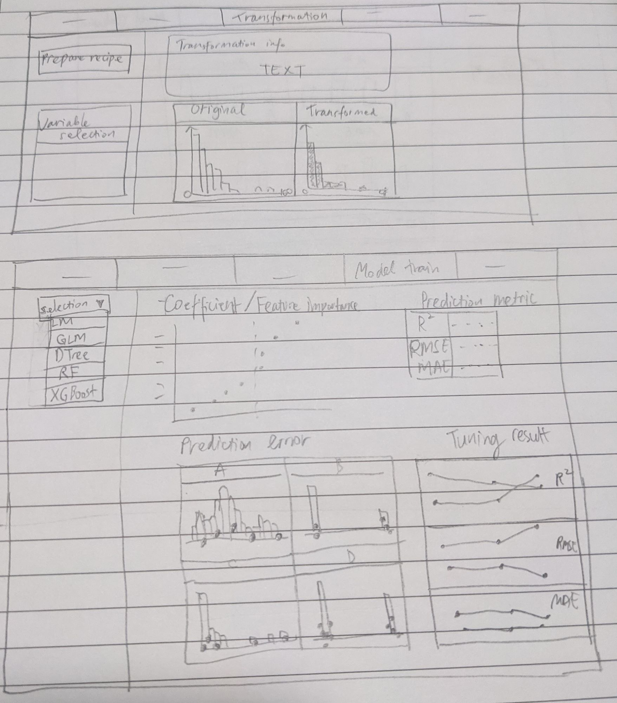

Prototype testing for the Predictive module for OurShinyPET
How visual analytics technique can be used to complement predictive analytics.
1. Introduction
This assignment will introduce the predictive analytics module from the main Visual Analytics Application (VAA) project on various analysis tools for Airbnb data. We will explore how visual analytics can be used to complement the existing practice of doing predictive analytics in R. There have been examples of different predictive analytics performed on Airbnb data, such as regression and classification. In this assignment, we will use regression and tree-based model to predict listing price as the use case.
2. Predictive analytics in R
Predictive analytics attempts to make prediction about a specific outcome based on historical data. It is done by understanding the relationship between variables/predictors to develop a prediction model. In general, predictive analytics comprises several steps:
a. Data pre-processing
b. Feature selection
c. Model training
d. Model tuning
e. Validation and model selection
Once the model is validated, it will deployed to serve the use case and its performance monitored as new data starts to be collected for prediction. However, these 2 last steps are out of the scope and we will focus on the earlier steps.
Built with the intent to help data scientists to run complex data science algorithms, R is equipped with comprehensive packages which makes it a choice for predictive analytics.
2.1 Data pre-processing
The availability of framework like Tidyverse makes data pre-processing activity more tidy and organised, owing to the fact that all packages inside Tidyverse have the same underlying grammar and data structures. In this first step, we explore the data set through exploratory data analysis (EDA) where it is generally supported by statistical summary functions like glimpse, skimr, and summary. To visualise the distribution and characteristics of our variables, ggplot package is used for plotting. Missing data handling and format/type adjustment are also performed to ensure appropriate variables for predictive analysis. Confirmatory data analysis (CDA) is also performed through hypothetical testing, whether a variable has statistically significant relationship related to the response variable. EDA and CDA are covered separately in the exploratory module of our VAA project.
2.2 Feature selection
From EDA and CDA, we would have a better understanding of the variables’ distribution and hence their potential to be considered in the prediction model. However, among all the available features in the data set, not all of them are important for prediction task. There are also issue with redundant variables which are not apparent from EDA/CDA alone. There are several methods of feature selection and they are grouped into these 3 methods:
-
Filter methods
In this method, statistical test for correlation of features with outcome variable as well as other features are performed as the basis of selection. This helps to avoid multicolinearity which may cause misleading prediction model. Common filter methods are correlation metrics, Anova, and Chi-Squared test. Among other methods, filter method process is independent of any machine learning algorithm. -
Embedded Methods
This method refers to model algorithms which have their own built-in feature selection methods such as LASSO regression and random forest. -
Wrapper Methods
Wrapper method takes a subset of features and use it to train a model. Based on the training result, we assess which features are important to the model. One of the example of this method is Forward/Backward/Stepwise regression. However, the inherent bias and the availability of alternative method like Recursive Feature Elimination (RFE) and Boruta have made stepwise regression used less for feature selection.
In this module, we will compare Random Forest (embedded method) and Boruta (wrapper method) as 2 ways to perform feature selection, on top of correlation matrix.
2.3 Model training, tuning, and validation
Quite recently, Max Kuhn introduces tidymodels as a framework with collection of packages for modeling and machine learning. This framework is aligned with the tidyverse principles which means we can expect a tidier and consistent grammar in our predictive analytics process. We will use tidymodels framework for our predictive module.

Figure 1: Components of tidymodels
tidymodels employ several components in each stage of predictive analytics and the diagram from Johns Hopkins Data Science Lab clearly describe how each component fits into the modeling process: rsample for data splitting, recipe for pre-processing, parsnip for model specification, tune for hyper-parameters tuning, and yardstick for model evaluation.

Figure 2: Predictive analytics process using tidymodels
3. Visualisation in predictive analytics
Lu, Y., Garcia, R., Hansen, B., Gleicher, M., & Maciejewski, R. (2017) provides a comprehensive summary in Predictive Visual Analytics. The paper discusses how visual analytics systems are implemented as an effort to support predictive analytics process such as feature selection, incremental learning, model comparison and result exploration.
In this section, more details are provided regarding the steps in predictive analytics and how visualisation can support the decision making in developing a predictive model.
3.1 Feature selection
In multivariate analysis, several R packages are available for creating correlation plot such as ggstatsplot, corrplot, GGally, ggcorrplot. For application, the function’s ability to take user argument will provide more flexibility and hence it is preferred. Some arguments that are adjustable for correlation plots are:
a. display types (shape, value)
b. display format (full, upper, lower)
c. clustering method (hierarchical clustering, angular order, principal component)
d. p-value method (Pearson, Spearman, Kendall)
For the purpose of verifying the statistical significance of the correlation, the selection of variables, p-value method, and threshold will be made available for customisation by user. Below is an example of interactivity for correlation matrix.

Figure 3: Interactivity for creation of correlation matrix
For feature importance, we use random forest method from ranger package and Boruta method as comparison for feature importance analysis. The feature will be plotted and sorted according to the importance score.

Figure 4: Feature importance comparison
3.2 Data splitting
Before model training, we divide our data into 2 sets, one for training and one for validation/test.

Figure 5: Train-test data splitting proportion
Apart from setting the proportion of train-test split (e.g. 80-20 ratio), visualisation can show the difference in distribution (if any) between training and test set. This will help in highlighting potential bias in the training data set.

Figure 6: Train-test data distribution (numeric)

Figure 7: Train-test data distribution (categorical)
Instead of using the training set as it is, we also perform k-fold cross-validation to estimate the performance of our model on unseen data. In this procedure, the training set is shuffled randomly and splitted into k groups. For each unique group, it will be taken as the hold-out/test data set (Note: this hold-out set is part of our training set and not the test set that was created during the initial train-test split) while the rest of the groups are used to train the model. The performance scores are then calculated using k groups as the hold-out set before they are then averaged to get the final score. This method generally helps reducing the model’s bias and over-optimistic estimate.
3.3 Data transformation
A series of data transformation such as normalisation, log transform, and one-hot encoding are common steps that are performed before modeling.
To help user understand the transformation steps performed on the data set, recipe in Tidymodel package allows the steps to be piped like tidyverse syntax, which makes it more organised and clear. A description on what transformation is performed and on what variables will be helpful for the user.

Figure 8: Pre-processing steps applied to the data set
The transformed variables are also plotted to help user understand the distribution of the variables that will be used for modeling.

Figure 9: Transformed variables
3.4 Model setup
Tidymodel comes with a selection of models available for performing regression such as glm, decision tree, random forest, and xgboost. We will apply all of these models to find the best performing model that we can use for predicting response variable. This process involves mainly writing the model specification in parsnip syntax and deciding hyper-parameter setting.
3.5 Model training
Once our model is trained, the coefficient of parameters for linear regression can be visualised using ggcoefstats function from ggstatsplot package. However, as will be explained in the later section, ggplotis used instead to provide more flexibility in interaction using plotly wrapper.

Figure 10: Coefficient of regression plot using *ggplot*
For tree-based model, we will extract the feature importance using vip package which conveniently plot the features and their importance as a bar chart. This provides a quick summary of which predictors have strong influence in our model.

Figure 11: Feature importance plot using *vip*
3.6 Model tuning and selection
Apart from doing cross validation, we want to adjust model hyper-parameters to avoid overfitting of training data. Hyper-parameter like penalty/lambda in regularised linear regression or tree depth and minimum points in a node in decision tree will be automatically tuned using the tune package which is part of the tidymodels universe.
The tuning process begin with creation of grid which represents the permutation of all hyper-parameters that are to be tuned. Subsequently the model performance will be assessed using different hyper-parameter values which are specified by the grid. Finally, metrics such as R-squared, MAE (Mean Absolute Error), and RMSE (Root Mean Squared Error) will be calculated for each of the tuned model. The metrics result can be collected from tune in tibble format which can then be piped to ggplot for visualisation. The best model is then selected accordingly, based on user selection on the metrics of choice.

Figure 12: Model tuning assessment plot
To assess our prediction result in more detail, we will also plot those points with high prediction error with regards to the distribution of training data set. This will help us to detect if certain characteristic of listing may have led to the high error. This is done by ggplot with geom_histogram for training set distribution and geom_jitter for points with high prediction error.

Figure 13: Checking of prediction error
4. Data preparation
Listings of Airbnbs in Singapore are extracted from InsideAirbnb.com and the processing steps mainly rely on functions from Tidyverse package.
4.1 Load packages
Besides Tidyverse, we will use ggplot2, skimr and naniar and for data preparation.
packages = c('tidyverse', 'ggplot2', 'skimr', 'naniar', 'plotly')
for(p in packages){
if(!require(p, character.only = T)){
install.packages(p)
}
library(p, character.only = T)
}
4.2 Load data
The data was loaded using read_csv() of the readr package, which reads delimited files into a tibble.
listings <- read_csv("./data/raw/listings.csv")
The dataset has 4,255 observations and 74 variables.
A number of redundant variables such as id, listing_url, etc. should be removed as they do not add value to any analysis.
Further, textual variables such as description, name, etc, were removed as these will be the scope for the Text Mining module. To the extent useful, textual data was converted to structured data through feature engineering (length of text).
Additionally, some variables e.g. price, host_response_rate, host_acceptance_rate are in character format and should be converted into numerical form.
glimpse(listings)
## Rows: 4,255
## Columns: 74
## $ id <dbl> 49091, 50646, 56334, 7160~
## $ listing_url <chr> "https://www.airbnb.com/r~
## $ scrape_id <dbl> 2.021013e+13, 2.021013e+1~
## $ last_scraped <date> 2021-01-27, 2021-01-28, ~
## $ name <chr> "COZICOMFORT LONG TERM ST~
## $ description <chr> "<b>The space</b><br />Th~
## $ neighborhood_overview <chr> NA, "The serenity & quiet~
## $ picture_url <chr> "https://a0.muscache.com/~
## $ host_id <dbl> 266763, 227796, 266763, 3~
## $ host_url <chr> "https://www.airbnb.com/u~
## $ host_name <chr> "Francesca", "Sujatha", "~
## $ host_since <date> 2010-10-20, 2010-09-08, ~
## $ host_location <chr> "Singapore", "Singapore, ~
## $ host_about <chr> "I am a private tutor by ~
## $ host_response_time <chr> "within a few hours", "a ~
## $ host_response_rate <chr> "100%", "0%", "100%", "10~
## $ host_acceptance_rate <chr> "N/A", "N/A", "N/A", "100~
## $ host_is_superhost <lgl> FALSE, FALSE, FALSE, FALS~
## $ host_thumbnail_url <chr> "https://a0.muscache.com/~
## $ host_picture_url <chr> "https://a0.muscache.com/~
## $ host_neighbourhood <chr> "Woodlands", "Bukit Timah~
## $ host_listings_count <dbl> 2, 1, 2, 8, 8, 8, 8, 6, 1~
## $ host_total_listings_count <dbl> 2, 1, 2, 8, 8, 8, 8, 6, 1~
## $ host_verifications <chr> "['email', 'phone', 'face~
## $ host_has_profile_pic <lgl> TRUE, TRUE, TRUE, TRUE, T~
## $ host_identity_verified <lgl> TRUE, TRUE, TRUE, TRUE, T~
## $ neighbourhood <chr> NA, "Singapore, Singapore~
## $ neighbourhood_cleansed <chr> "Woodlands", "Bukit Timah~
## $ neighbourhood_group_cleansed <chr> "North Region", "Central ~
## $ latitude <dbl> 1.44255, 1.33235, 1.44246~
## $ longitude <dbl> 103.7958, 103.7852, 103.7~
## $ property_type <chr> "Private room in apartmen~
## $ room_type <chr> "Private room", "Private ~
## $ accommodates <dbl> 1, 2, 1, 6, 3, 3, 6, 2, 1~
## $ bathrooms <lgl> NA, NA, NA, NA, NA, NA, N~
## $ bathrooms_text <chr> "1 bath", "1 bath", "1 ba~
## $ bedrooms <dbl> 1, 1, 1, 2, 1, 1, 1, 1, 1~
## $ beds <dbl> 1, 1, 1, 3, 1, 2, 7, 1, 1~
## $ amenities <chr> "[\"Washer\", \"Elevator\~
## $ price <chr> "$80.00", "$80.00", "$66.~
## $ minimum_nights <dbl> 180, 90, 6, 90, 90, 90, 1~
## $ maximum_nights <dbl> 360, 730, 14, 1125, 1125,~
## $ minimum_minimum_nights <dbl> 180, 90, 6, 90, 90, 90, 1~
## $ maximum_minimum_nights <dbl> 180, 90, 6, 90, 90, 90, 1~
## $ minimum_maximum_nights <dbl> 360, 730, 14, 1125, 1125,~
## $ maximum_maximum_nights <dbl> 360, 730, 14, 1125, 1125,~
## $ minimum_nights_avg_ntm <dbl> 180.0, 90.0, 6.0, 90.0, 9~
## $ maximum_nights_avg_ntm <dbl> 360, 730, 14, 1125, 1125,~
## $ calendar_updated <lgl> NA, NA, NA, NA, NA, NA, N~
## $ has_availability <lgl> TRUE, TRUE, TRUE, TRUE, T~
## $ availability_30 <dbl> 30, 30, 30, 30, 30, 30, 3~
## $ availability_60 <dbl> 60, 60, 60, 60, 60, 60, 6~
## $ availability_90 <dbl> 90, 90, 90, 90, 90, 90, 9~
## $ availability_365 <dbl> 365, 365, 365, 365, 365, ~
## $ calendar_last_scraped <date> 2021-01-27, 2021-01-28, ~
## $ number_of_reviews <dbl> 1, 18, 20, 20, 24, 48, 29~
## $ number_of_reviews_ltm <dbl> 0, 0, 0, 0, 0, 0, 0, 0, 2~
## $ number_of_reviews_l30d <dbl> 0, 0, 0, 0, 0, 0, 0, 0, 0~
## $ first_review <date> 2013-10-21, 2014-04-18, ~
## $ last_review <date> 2013-10-21, 2014-12-26, ~
## $ review_scores_rating <dbl> 94, 91, 98, 89, 83, 88, 8~
## $ review_scores_accuracy <dbl> 10, 9, 10, 9, 8, 9, 9, 9,~
## $ review_scores_cleanliness <dbl> 10, 10, 10, 8, 8, 9, 8, 9~
## $ review_scores_checkin <dbl> 10, 10, 10, 9, 9, 9, 9, 9~
## $ review_scores_communication <dbl> 10, 10, 10, 10, 9, 9, 9, ~
## $ review_scores_location <dbl> 8, 9, 8, 9, 8, 9, 9, 9, 1~
## $ review_scores_value <dbl> 8, 9, 9, 9, 8, 9, 8, 9, 9~
## $ license <lgl> NA, NA, NA, NA, NA, NA, N~
## $ instant_bookable <lgl> FALSE, FALSE, FALSE, TRUE~
## $ calculated_host_listings_count <dbl> 2, 1, 2, 8, 8, 8, 8, 7, 1~
## $ calculated_host_listings_count_entire_homes <dbl> 0, 0, 0, 0, 0, 0, 0, 1, 0~
## $ calculated_host_listings_count_private_rooms <dbl> 2, 1, 2, 8, 8, 8, 8, 6, 1~
## $ calculated_host_listings_count_shared_rooms <dbl> 0, 0, 0, 0, 0, 0, 0, 0, 0~
## $ reviews_per_month <dbl> 0.01, 0.22, 0.17, 0.18, 0~
4.3 Remove unnecessary variables
To avoid having too many variables that would overwhelm the user, we have dropped variables that are not useful for analysis.
listings2 <- listings %>%
select(-id, -listing_url, -scrape_id, -neighborhood_overview, -picture_url,
-host_id, -host_url, -host_name, -host_location, -host_thumbnail_url,
-host_picture_url, -first_review, -last_review, -last_scraped,
-calendar_last_scraped, -has_availability, -host_has_profile_pic,
-calendar_updated, -license, -bathrooms, -neighbourhood,
-host_neighbourhood)
4.4 Create new variables
i) Feature engineering - Convert unstructured variables to structured variables
Textual variables such as name, description, host_about, bathroom_text , bathrooms_text, host_verifications_count were converted into structured variables by counting the length of the text.
# convert textual data to structured data
listings3 <- listings2 %>%
mutate_at(vars(name,description,host_about),str_squish) %>% #remove all whitespaces
mutate(name_length = str_count(name, ".")) %>% #count characters
mutate(description_length = str_count(description, ".")) %>%
mutate(host_about_length = str_count(host_about, ".")) %>%
select(-name, -description, -host_about)
# convert textual data to structured data
listings3 <- listings3 %>%
mutate(bathrooms_text = tolower(bathrooms_text)) %>%
mutate(bathrooms_text = str_replace(bathrooms_text, "half", "0.5")) %>%
mutate(bathroom = parse_number(bathrooms_text)) %>%
mutate(bathroom_type = case_when(
str_detect(bathrooms_text, "private") ~ "Private",
str_detect(bathrooms_text, "share") ~ "Shared",
TRUE ~ "Other")
) %>%
select(-bathrooms_text)
# replace amenities with count of amenities
listings3 <- listings3 %>%
mutate(amenities_count = sapply(str_split(amenities, ","), length)) %>%
select(-amenities)
# replace host_verification with count of verification
listings3 <- listings3 %>%
mutate(host_verifications_count = sapply(str_split(host_verifications, ","), length)) %>%
select(-host_verifications)
ii) Derive the number of days since a host joined Airbnb platform - days_joined
Using the variable host_since, which is in date format, we have calculated the number of days since the host started hosting Airbnb guests.
listings4 <- listings3 %>%
mutate(days_joined = as.numeric(as.Date("2021/01/01",
"%Y/%m/%d")-host_since)) %>%
select(-host_since)
iii) Derive property type
The property_type variable comprises both room and property type (e.g. Private room in apartment). We will extract just the property type from property_type variable.
# get actual property type (remove room type component) from property_type
listings5 <- listings4 %>%
mutate(property_type = tolower(property_type)) %>%
mutate(property_type = case_when(
grepl(" in ", property_type, fixed = TRUE) == TRUE ~ gsub("^.*in ", "", property_type),
TRUE ~ gsub("entire ", "", property_type)
))
4.5 Change data type
- Change price-related attribute from character format to numeric.
- Convert character and logical variables to factor data type.
listings6 <- listings5 %>%
mutate_at(vars(c(contains("price"))), ~as.numeric(str_replace(., "\\$", ""))) %>% #price to numeric
mutate_at(vars(c(contains("rate"))), ~as.numeric(str_replace(., "\\%", ""))) #rate to numeric
#remove listing with $0 price
listings6 <- listings6 %>%
filter(price!=0)
listings6 <- listings6 %>%
mutate(across(where(is.character), as.factor)) %>% #convert character to factor
mutate(across(where(is.logical), as.factor)) #convert logical to factor
4.6 Consolidate similar levels within a variable
For the host_response_time variable, there are 6 levels of which 2 are N/A and NA.
As such, we have renamed NA to N/A as one level.
levels(listings6$host_response_time)
## [1] "a few days or more" "N/A" "within a day"
## [4] "within a few hours" "within an hour"
listings6$host_response_time[is.na(listings6$host_response_time)] <- "N/A"
4.7 View final listing
Review the final output after data wrangling.
final_listing <- listings6
glimpse(final_listing)
## Rows: 4,212
## Columns: 53
## $ host_response_time <fct> within a few hours, a few~
## $ host_response_rate <dbl> 100, 0, 100, 100, 100, 10~
## $ host_acceptance_rate <dbl> NA, NA, NA, 100, 100, 100~
## $ host_is_superhost <fct> FALSE, FALSE, FALSE, FALS~
## $ host_listings_count <dbl> 2, 1, 2, 8, 8, 8, 8, 6, 1~
## $ host_total_listings_count <dbl> 2, 1, 2, 8, 8, 8, 8, 6, 1~
## $ host_identity_verified <fct> TRUE, TRUE, TRUE, TRUE, T~
## $ neighbourhood_cleansed <fct> Woodlands, Bukit Timah, W~
## $ neighbourhood_group_cleansed <fct> North Region, Central Reg~
## $ latitude <dbl> 1.44255, 1.33235, 1.44246~
## $ longitude <dbl> 103.7958, 103.7852, 103.7~
## $ property_type <fct> apartment, apartment, apa~
## $ room_type <fct> Private room, Private roo~
## $ accommodates <dbl> 1, 2, 1, 6, 3, 3, 6, 2, 1~
## $ bedrooms <dbl> 1, 1, 1, 2, 1, 1, 1, 1, 1~
## $ beds <dbl> 1, 1, 1, 3, 1, 2, 7, 1, 1~
## $ price <dbl> 80, 80, 66, 174, 80, 80, ~
## $ minimum_nights <dbl> 180, 90, 6, 90, 90, 90, 1~
## $ maximum_nights <dbl> 360, 730, 14, 1125, 1125,~
## $ minimum_minimum_nights <dbl> 180, 90, 6, 90, 90, 90, 1~
## $ maximum_minimum_nights <dbl> 180, 90, 6, 90, 90, 90, 1~
## $ minimum_maximum_nights <dbl> 360, 730, 14, 1125, 1125,~
## $ maximum_maximum_nights <dbl> 360, 730, 14, 1125, 1125,~
## $ minimum_nights_avg_ntm <dbl> 180.0, 90.0, 6.0, 90.0, 9~
## $ maximum_nights_avg_ntm <dbl> 360, 730, 14, 1125, 1125,~
## $ availability_30 <dbl> 30, 30, 30, 30, 30, 30, 3~
## $ availability_60 <dbl> 60, 60, 60, 60, 60, 60, 6~
## $ availability_90 <dbl> 90, 90, 90, 90, 90, 90, 9~
## $ availability_365 <dbl> 365, 365, 365, 365, 365, ~
## $ number_of_reviews <dbl> 1, 18, 20, 20, 24, 48, 29~
## $ number_of_reviews_ltm <dbl> 0, 0, 0, 0, 0, 0, 0, 0, 2~
## $ number_of_reviews_l30d <dbl> 0, 0, 0, 0, 0, 0, 0, 0, 0~
## $ review_scores_rating <dbl> 94, 91, 98, 89, 83, 88, 8~
## $ review_scores_accuracy <dbl> 10, 9, 10, 9, 8, 9, 9, 9,~
## $ review_scores_cleanliness <dbl> 10, 10, 10, 8, 8, 9, 8, 9~
## $ review_scores_checkin <dbl> 10, 10, 10, 9, 9, 9, 9, 9~
## $ review_scores_communication <dbl> 10, 10, 10, 10, 9, 9, 9, ~
## $ review_scores_location <dbl> 8, 9, 8, 9, 8, 9, 9, 9, 1~
## $ review_scores_value <dbl> 8, 9, 9, 9, 8, 9, 8, 9, 9~
## $ instant_bookable <fct> FALSE, FALSE, FALSE, TRUE~
## $ calculated_host_listings_count <dbl> 2, 1, 2, 8, 8, 8, 8, 7, 1~
## $ calculated_host_listings_count_entire_homes <dbl> 0, 0, 0, 0, 0, 0, 0, 1, 0~
## $ calculated_host_listings_count_private_rooms <dbl> 2, 1, 2, 8, 8, 8, 8, 6, 1~
## $ calculated_host_listings_count_shared_rooms <dbl> 0, 0, 0, 0, 0, 0, 0, 0, 0~
## $ reviews_per_month <dbl> 0.01, 0.22, 0.17, 0.18, 0~
## $ name_length <int> 33, 31, 11, 35, 30, 26, 3~
## $ description_length <int> 1000, 589, 880, 1000, 990~
## $ host_about_length <int> 326, 79, 326, 772, 772, 7~
## $ bathroom <dbl> 1.0, 1.0, 1.0, 1.0, 0.5, ~
## $ bathroom_type <fct> Other, Other, Other, Priv~
## $ amenities_count <int> 7, 12, 8, 25, 21, 16, 22,~
## $ host_verifications_count <int> 9, 8, 9, 5, 5, 5, 5, 7, 5~
## $ days_joined <dbl> 3726, 3768, 3726, 3625, 3~
5. Proposed predictive analysis module
This section provides the code and proposed visualisation in each predictive analytics steps described in section 3.
5.1 Load R packages and pre-processed AirBnb data set
First, we are going to load the required packages.
packages = c('tidyverse', 'tidymodels', 'ggstatsplot', 'ggplot2', 'plotly',
'skimr', 'Boruta', 'vip', 'corrplot', 'GGally', 'ggcorrplot',
'reshape2', 'tictoc', 'tidytext', 'visNetwork', 'rattle', 'sparkline','widgetframe', 'glmnet', 'xgboost')
for(p in packages){
if(!require(p, character.only = T)){
install.packages(p)
}
library(p, character.only = T)
}
## Loading required package: tidymodels
## -- Attaching packages -------------------------------------- tidymodels 0.1.2 --
## v broom 0.7.6 v recipes 0.1.16
## v dials 0.0.9 v rsample 0.0.9
## v infer 0.5.4 v tune 0.1.3
## v modeldata 0.1.0 v workflows 0.2.2
## v parsnip 0.1.5 v yardstick 0.0.8
## -- Conflicts ----------------------------------------- tidymodels_conflicts() --
## x scales::discard() masks purrr::discard()
## x plotly::filter() masks dplyr::filter(), stats::filter()
## x recipes::fixed() masks stringr::fixed()
## x dplyr::lag() masks stats::lag()
## x yardstick::spec() masks readr::spec()
## x recipes::step() masks stats::step()
## Loading required package: ggstatsplot
## In case you would like cite this package, cite it as:
## Patil, I. (2018). ggstatsplot: "ggplot2" Based Plots with Statistical Details. CRAN.
## Retrieved from https://cran.r-project.org/web/packages/ggstatsplot/index.html
## Loading required package: Boruta
## Loading required package: vip
##
## Attaching package: 'vip'
## The following object is masked from 'package:utils':
##
## vi
## Loading required package: corrplot
## corrplot 0.84 loaded
## Loading required package: GGally
## Registered S3 method overwritten by 'GGally':
## method from
## +.gg ggplot2
## Loading required package: ggcorrplot
## Loading required package: reshape2
##
## Attaching package: 'reshape2'
## The following object is masked from 'package:tidyr':
##
## smiths
## Loading required package: tictoc
## Loading required package: tidytext
## Loading required package: visNetwork
## Loading required package: rattle
## Loading required package: bitops
## Registered S3 method overwritten by 'rattle':
## method from
## predict.kmeans parameters
## Rattle: A free graphical interface for data science with R.
## Version 5.4.0 Copyright (c) 2006-2020 Togaware Pty Ltd.
## Type 'rattle()' to shake, rattle, and roll your data.
## Loading required package: sparkline
## Loading required package: widgetframe
## Loading required package: htmlwidgets
## Loading required package: glmnet
## Loading required package: Matrix
##
## Attaching package: 'Matrix'
## The following objects are masked from 'package:tidyr':
##
## expand, pack, unpack
## Loaded glmnet 4.1-1
## Loading required package: xgboost
##
## Attaching package: 'xgboost'
## The following object is masked from 'package:rattle':
##
## xgboost
## The following object is masked from 'package:plotly':
##
## slice
## The following object is masked from 'package:dplyr':
##
## slice
Next, processed data is loaded into listing_prep variable.
listing_prep <- listings6
In this example, we will set listing price (price) as the response/target variable. The predictor variables are also filtered to simplify the example.
predVar <- c("host_response_time", "host_response_rate" , "host_acceptance_rate",
"host_is_superhost", "host_listings_count", "host_identity_verified",
"neighbourhood_cleansed", "neighbourhood_group_cleansed", "latitude",
"longitude", "property_type", "room_type", "accommodates", "bedrooms",
"beds", "minimum_nights", "maximum_nights", "availability_30",
"availability_60", "availability_90", "availability_365",
"number_of_reviews", "review_scores_rating", "instant_bookable",
"reviews_per_month", "name_length", "description_length",
"host_about_length", "bathroom", "bathroom_type",
"host_verifications_count", "amenities_count", "days_joined")
targetVar <- sym("price")
Character and logical variables are converted into factor variable.
listing_prep2 <- listing_prep %>%
select(all_of(predVar), targetVar) %>%
mutate(across(where(is.character), as.factor)) %>%
mutate(across(where(is.logical), as.factor))
## Note: Using an external vector in selections is ambiguous.
## i Use `all_of(targetVar)` instead of `targetVar` to silence this message.
## i See <https://tidyselect.r-lib.org/reference/faq-external-vector.html>.
## This message is displayed once per session.
5.2 Correlation plot
First, we will separate numeric variables into listing_prep2_num for corrrelation analysis.
listing_prep2_num <- listing_prep2 %>%
keep(is.numeric)
dim(listing_prep2_num)
## [1] 4212 25
names(listing_prep2_num)
## [1] "host_response_rate" "host_acceptance_rate"
## [3] "host_listings_count" "latitude"
## [5] "longitude" "accommodates"
## [7] "bedrooms" "beds"
## [9] "minimum_nights" "maximum_nights"
## [11] "availability_30" "availability_60"
## [13] "availability_90" "availability_365"
## [15] "number_of_reviews" "review_scores_rating"
## [17] "reviews_per_month" "name_length"
## [19] "description_length" "host_about_length"
## [21] "bathroom" "host_verifications_count"
## [23] "amenities_count" "days_joined"
## [25] "price"
Next, correlation matrix is used to evaluate correlation between target variable and the predictors, as well as correlation among the predictors (test for multicolinearity). We will use cor to create the correlation matrix and corrplot to visualise the matrix.
tic("corrplot timing")
corM <- listing_prep2_num %>%
cor(use = "pairwise.complete.obs", method = "pearson")
res1 <- listing_prep2_num %>%
cor.mtest(conf.level = .95)
col3 <- colorRampPalette(c("red", "white", "blue"))
corrplot(corM, type = "lower", method = "color", order = "hclust",
diag = FALSE, hclust.method = "ward.D",
addgrid.col = "black", addCoef.col = "black", col = col3(100),
p.mat = res1$p, sig.level = 0.05, insig = "pch", pch.cex = 0.8,
tl.cex = 0.7, number.cex = 0.7)

toc()
## corrplot timing: 0.45 sec elapsed
Another package like GGally provides additional information such as scatter plot and variable distribution on top of the correlation coefficient. This method is good for less than 10 variables at once, beyond which the display become cluttered. However, as we are more interested in the correlation coefficient, GGally is less suitable in this case. Below ggpairs plot is provided for example using the first 8 variables.
listing_prep2_num %>%
select(c(1:8)) %>%
ggpairs(title = "Correlogram with ggpairs",
upper = list(continuous = wrap("cor", size=3, method="pearson")))

Another alternative is ggcorrmat from ggstatsplot package, which is a wrapper of ggcorrplot. However, the time taken to churn the plot is longer as compared to using corrplot. For the sake of minimising user waiting time, we will have to look for other alternative although the statistics information display is better in ggcorrmat.
tic("ggcorrmat timing")
listing_prep2_num %>%
ggcorrmat(type="pearson",
ggcorrplot.args = list(outline.color = "black",
hc.order = TRUE,
pch.cex = 0.5,
tl.cex = 10,
lab_size = 4))

toc()
## ggcorrmat timing: 7.08 sec elapsed
If the above plots are all static, we can use ggcorrplot with plotly wrapper to create an interactive correlation matrix.
corM <- cor(listing_prep2_num,
use = "pairwise.complete.obs",
method = "pearson")
p_mat <- cor_pmat(listing_prep2_num)
corr.plot <- ggcorrplot(corM, hc.order = TRUE,
type = "lower",
p.mat = p_mat,
pch.cex = 1, tl.cex = 7, lab_size = 5)
gg_cor <- ggplotly(corr.plot)
widgetframe::frameWidget(gg_cor)
However, the tooltip label in the above plot does not provide much information as the value can be ambiguous (either p-value or correlation coefficient). And as we are wrapping plotly over corrplot, there is less flexibility as compared to creating our own plot using ggplot.
So, the following code chunk is an attempt to create customised correlation matrix using ggplot and plotly. The guideline in this link provides a good reference on creating correlation matrix heat map.
tic("ggplot timing")
#user input (correlation method and p-value)
corr_method <- "Pearson"
p_val <- 0.05
corM <- cor(listing_prep2_num,
use = "pairwise.complete.obs",
method = tolower(corr_method))
p_mat <- cor_pmat(listing_prep2_num)
corM[upper.tri(corM)] <- NA
p_mat[upper.tri(p_mat)] <- NA
mlt_cor <- melt(corM, value.name = "Correlation")
mlt_p <- melt(p_mat, value.name = "pValue")
mlt_df <- merge(mlt_cor, mlt_p)
mlt_df_x <- mlt_df %>%
na.omit() %>%
filter(pValue > p_val)
gheat <- ggplot(NULL, aes(Var1, Var2, fill = Correlation,
text = paste0(Var1," - ", Var2, "\n",
"Correlation: ", round(Correlation, 3),
"\nP-val: ", round(pValue, 3)))) +
geom_tile(data=mlt_df) +
scale_fill_gradient2(low = "blue", high = "red", mid = "white",
midpoint = 0, limit = c(-1,1),
name=paste0(corr_method,"\nCorrelation"))
# gheat <- gheat +
# geom_text(data=mlt_df, aes(Var1, Var2, label = round(Correlation, 2)), size = 2)
gx <- gheat +
geom_point(data=mlt_df_x, shape=4, size=1, stroke=0.5, fill=NA, color="black") +
scale_shape_identity() +
theme(axis.text.x = element_text(angle = 45, vjust = 0.5, hjust=1, size = 7),
axis.text.y = element_text(size = 7),
axis.title.x = element_blank(),
axis.title.y = element_blank(),
panel.grid.major = element_blank(),
panel.border = element_blank(),
panel.background = element_blank(),
axis.ticks = element_blank(),
legend.title = element_text(size = 7),
legend.text = element_text(size = 6))
gxly <- ggplotly(gx, tooltip=c('text'))
widgetframe::frameWidget(gxly)
toc()
## ggplot timing: 7.11 sec elapsed
Based on the result above, we can remove some variables that are known to be highly correlated with others. We will remove reviews_per_month, availability_60, availability_90, and availability_365 as they have relatively high correlation score (above 0.6). This will also help in the feature selection process as Boruta algorithm does not treat collinearity when selecting important variables.
var_to_remove <- c("reviews_per_month", "availability_60", "availability_90",
"availability_365")
listing_prep2 <- listing_prep2 %>%
select(-all_of(var_to_remove))
In addition to correlation matrix, we want to perform feature importance analysis using random forest and Boruta algorithm. However, as it requires model training, we need to perform this analysis on the training data set only to avoid bias in the model. Therefore, we will first proceed with splitting of data set into train and test set in the next section, before returning to our feature importance evaluation later.
5.3 Train-test data split
Splitting data into training and test set is done by calling initial_split function from rsample package (part of tidymodels). The proportion of training set can be set in the training_prop argument which is then supplied to initial_split. We use stratified sampling (strata argument) based on the target variable in order to ensure balance representation of target variable in both training and test set.
Although stratified sampling is often used for classification, it is also appropriate for regression with small sample size and for target variable which does not follow normal distribution. Stratified sampling will break target variable into quantiles and randomly sample from each quantile.
set.seed(1234)
training_prop <- 0.8
listing_split <- listing_prep2 %>%
rename(target_var = targetVar) %>%
drop_na(target_var) %>% #remove rows where target variable is missing
mutate(id = row_number()) %>%
initial_split(prop = training_prop, strata = target_var)
listing_train <- training(listing_split)
listing_test <- testing(listing_split)
Next, we would like to visualise how our data set are divided into the training and test set. This is to understand the possibility of different distribution between the two data sets which may affect the model performance. For numeric variable, we will use density plot to do so.
train_grp <- listing_train %>%
mutate(split = "training")
test_grp <- listing_test %>%
mutate(split = "test")
trainTest_grp <- rbind(train_grp, test_grp)
trainTest_p <- trainTest_grp %>%
rename(!!targetVar := target_var) %>%
select(where(is.numeric) | split) %>%
select(-id) %>%
gather(key, value, -split) %>%
ggplot(aes(x = value, fill = split)) +
facet_wrap(~ key, scales = "free", ncol = 3) +
geom_density(alpha=0.5)
trainTest_ply <- ggplotly(trainTest_p)
Whereas for categorical variable, we will use bar chart.
trainTest_p2 <- trainTest_grp %>%
select(where(negate(is.numeric)) | split) %>%
gather(key, value, -split) %>%
filter(!is.na(value)) %>%
ggplot(aes(x = value, fill = split)) +
facet_wrap(~ key, scales = "free", ncol = 3) +
geom_bar() +
theme(axis.text.x = element_blank())
p2ly <- ggplotly(trainTest_p2)
5.4 Feature importance
First method of feature importance is using random forest. Here, we fit our data into random forest model using ranger package and the feature importance is calculated. The resulting importance value is extracted and plotted using ggplot and wrapped with plotly for interactivity.
rf_res1 <- ranger::ranger(target_var ~ ., data = listing_train %>% na.omit(),
importance = "permutation")
rf_p <- ranger::importance(rf_res1) %>%
enframe("Variable", "Importance") %>%
mutate(Variable = fct_reorder(Variable, Importance)) %>%
arrange(desc(Importance)) %>%
ggplot(aes(x = Variable, y = Importance,
text = paste0(Variable, "\nImportance:", round(Importance,3)))) +
geom_col() +
coord_flip() +
scale_fill_viridis_d(end = .7) +
labs(title = "Feature Importance")
rf_ply <- ggplotly(rf_p, tooltip = c('text'))
widgetframe::frameWidget(rf_ply)
Feature importance using boruta algorithm to be compared with random forest.
boruta_output <- Boruta(target_var ~ .,
data = listing_train %>% na.omit(),
maxRuns = 50,
doTrace = 0)
boruta_output_tbl <- as.data.frame(boruta_output$ImpHistory) %>%
gather()
fac <- with(boruta_output_tbl, reorder(key, value, median, order = TRUE))
boruta_output_tbl$key <- factor(boruta_output_tbl$key, levels = levels(fac))
boruta_p <- boruta_output_tbl %>%
ggplot(aes(x = key, y = value)) +
geom_boxplot() +
ggtitle("Feature Importance") +
xlab("Variable") +
ylab("Importance") +
coord_flip()
boruta_ply <- ggplotly(boruta_p)
widgetframe::frameWidget(boruta_ply)
In fact, feature selection using feature importance score can be done as a step in the pre-processing recipe. However, this require recipeselectors package which is still under development and not available in CRAN yet at the time of writing this post. Therefore, we will select our variables using select manually
selected_var <- c("accommodates", "room_type", "bedrooms", "bathroom_type",
"days_joined", "beds", "amenities_count",
"property_type", "latitude", "longitude", "bathroom",
"price")
set.seed(1234)
training_prop <- 0.8
listing_split <- listing_prep2 %>%
select(all_of(selected_var)) %>%
rename(target_var = targetVar) %>%
na.omit() %>% #remove all rows with missing values
mutate(id = row_number()) %>%
initial_split(prop = training_prop, strata = target_var)
listing_train <- training(listing_split)
listing_test <- testing(listing_split)
5.5 Build transformation recipe
After we assess the correlation and feature importance, we also need to perform several processing steps as follows:
- removal of rows with NA (missing data) [
step_naomit] - removal of highly correlated variables [
step_corr] with a specified threshold - normalise variable to get similar range of values among variables [
step_normalize] - pool infrequently occurring values into “other” category [
step_other] - one hot encoding for categorical variables [
step_dummy]
Other available steps inrecipecan be found here
We will create 3 different recipes for linear regression, decision tree, and random forest model as they have different requirement of data transformation. For tree-based model, we can skip normalisation and one-hot encoding steps.
#recipe for linear regression
rcpTransform1 <- recipe(target_var ~ ., data = listing_train) %>%
update_role(id, new_role = "id variable") %>%
step_naomit(all_predictors(), skip = TRUE) %>% #remove rows with NA
step_corr(all_numeric(), -all_outcomes(), -id, threshold = 0.7,
method = "pearson") %>% #remove correlated variables at 0.7 threshold
step_normalize(all_numeric(), -all_outcomes(), -id) %>%
step_other(all_predictors(), -all_numeric(),
threshold = 0.05, other = "Others") %>%
step_dummy(all_nominal(), -all_outcomes())
#recipe for decision tree
rcpTransform2 <- recipe(target_var ~ ., data = listing_train) %>%
update_role(id, new_role = "id variable") %>%
step_other(all_predictors(), -all_numeric(),
threshold = 0.05, other = "Others")
#recipe for random forest
rcpTransform3 <- recipe(target_var ~ ., data = listing_train) %>%
update_role(id, new_role = "id variable") %>%
step_other(all_predictors(), -all_numeric(),
threshold = 0.05, other = "Others")
To understand what the pre-processing recipe does to our data set, we will apply the recipe and plot them side by side.
#apply recipe to training data
listingTrain_T <- rcpTransform1 %>% prep() %>% juice()
#get numeric variables only
intersect_vars <- intersect(names(listing_train), names(listingTrain_T))
#assign label for original and processed data
train_proc <- listing_train %>%
select(all_of(intersect_vars)) %>%
mutate(processed = "original")
train_T_proc <- listingTrain_T %>%
select(all_of(intersect_vars)) %>%
mutate(processed = "processed")
trainTProcessed <- rbind(train_proc, train_T_proc)
#plot
trainTProcessed %>%
select(where(is.numeric) | processed) %>%
select(c(1,ncol(.))) %>%
gather(key, value, -processed) %>%
ggplot(aes(x = value, fill = processed)) +
facet_wrap(~ processed, scales = "free") +
geom_histogram(alpha=0.5)
## `stat_bin()` using `bins = 30`. Pick better value with `binwidth`.

5.6 Linear regression model
First, we will build a linear regression model using parsnip. The first step is to specify the model specification. Model specification is then fed in to a workflow object which acts as a container that aggregates information required to fit and predict a model. This leads to a more readable code (workflow is part of tidymodels framework).
Next, the model is fitted using our training set (listing_train). The statistics such as Rsquared and p-value of the model can be extracted using glance while the parameter coefficient is plotted using ggcoefstats from ggstatsplot package. In the code chunk below, only coefficient with p-value of less than 0.05 is displayed.
#Linear regression
lm_mod <- linear_reg() %>%
set_engine("lm") %>%
set_mode("regression")
listing_wflow <- workflow() %>%
add_model(lm_mod) %>%
add_recipe(rcpTransform1)
listing_fit <- listing_wflow %>%
fit(data = listing_train)
glance(listing_fit)
## # A tibble: 1 x 12
## r.squared adj.r.squared sigma statistic p.value df logLik AIC BIC
## <dbl> <dbl> <dbl> <dbl> <dbl> <dbl> <dbl> <dbl> <dbl>
## 1 0.345 0.342 99.8 87.9 1.51e-259 18 -18158. 36356. 36476.
## # ... with 3 more variables: deviance <dbl>, df.residual <int>, nobs <int>
fitResult <- listing_fit %>%
pull_workflow_fit() %>%
tidy()
ggcoefstats(listing_fit$fit$fit$fit,
sort = "ascending",
exclude.intercept = TRUE,
only.significant = TRUE)
## Warning: Number of labels is greater than default palette color count.
## Try using another color `palette` (and/or `package`).
##

ggcoefstats is a good wrapper for plotting the regression coefficient. However, it is limited towards customisation such as sorting by p-value/coefficient, p-value information on-demand (rather than plotting all the labels) and tooltip information when we use plotly for interactivity. Therefore, the following code chunk is provided to create similar plot using ggplot and plotly.
#select p-value threshold
pval <- 0.05
#choose sorting by p.value or estimate
sort_by <- "p.value_neg"
# sort_by <- "estimate"
#get significant features
sig_lm_predictors <- fitResult %>%
filter(p.value <= pval) %>%
mutate(p.value_neg = -p.value)
#plot
regly <- ggplotly(
sig_lm_predictors %>%
ggplot(aes(x = estimate, y = reorder(term, !!as.symbol(sort_by)),
text = paste0(term, "\nestimate: ", round(estimate,3),
"\n95% CI: ", round(estimate-std.error,2),
"-", round(estimate+std.error,2),
"\np-value: ", round(p.value,5)))) +
geom_pointrange(aes(xmin = estimate-std.error, xmax = estimate+std.error)) +
geom_vline(xintercept = 0, linetype = "dashed") +
theme(axis.title.y = element_blank()),
tooltip = c('text')
)
widgetframe::frameWidget(regly)
The trained model is then used to predict listing price in the test set (listing_test). The test set is pre-processed using the recipe with prep() and bake() steps, which are then added with the prediction result from predict. This is so that we get a tibble dataframe with both predicted and actual value. The performance metric such as RMSE, MAPE, MAE, and Rsquared can be collected using metric_set function from yardstick package. Finally, we plot both predicted vs actual value in an Rsquared plot.
listing_test_T <- rcpTransform1 %>% prep() %>% bake(listing_test)
listing_pred <- predict(listing_fit, new_data = listing_test) %>%
bind_cols(listing_test_T)
multi_metric <- metric_set(mae, mape, rmse, rsq)
final_metric_lm <- listing_pred %>%
multi_metric(truth = target_var, estimate = .pred)
pred_p <- ggplot(listing_pred, aes(x = target_var, y = .pred)) +
geom_point() +
geom_abline() +
coord_obs_pred() +
labs(title = "R-squared plot",
x = paste0("Actual ", targetVar),
y = paste0("Predicted ", targetVar))
pred_ply <- ggplotly(pred_p)
widgetframe::frameWidget(pred_ply)
final_metric_lm
## # A tibble: 4 x 3
## .metric .estimator .estimate
## <chr> <chr> <dbl>
## 1 mae standard 56.0
## 2 mape standard 59.2
## 3 rmse standard 93.3
## 4 rsq standard 0.414
From the plot, the predicted value below $250 shows relatively good agreement with the actual value. On the other hand, the model underestimates the predicted price for listing price above $250.
We can further evaluate those predicted values which deviate greatly from the actual values. First, we get the top 9 predictors from training model (based on p.value) and prepare the filtered training set.
slp <- sig_lm_predictors %>%
filter(term != "(Intercept)") %>%
arrange(p.value) %>%
top_n(9) %>%
pull(term)
## Selecting by p.value_neg
slp_train <- listingTrain_T %>%
select(all_of(slp)) %>%
gather()
Next, we get the id of the top N predicted result with highest error and prepare the filtered data set.
topn_val <- 10
top_err_id <- listing_pred %>%
mutate(pred_error = abs(target_var-.pred)) %>%
arrange(-pred_error) %>%
top_n(topn_val) %>%
pull(id)
## Selecting by pred_error
top_err <- listing_pred %>%
filter(id %in% top_err_id) %>%
mutate(pred_error = abs(target_var-.pred)) %>%
select(all_of(slp), id, pred_error) %>%
gather(key, value, -id, -pred_error) %>%
mutate(id = as.factor(id))
We can then plot the two data set with selected 9 predictors by:
- plotting the training set distribution as histogram
- plotting the test set data points as point with jitter
color_vec <- rep(c("red"), times = length(unique(top_err$id)))
pred_erly <- ggplotly(ggplot(NULL, aes(x = value)) +
geom_histogram(data = slp_train, color = "grey70",
fill = "grey60", alpha = 0.5) +
geom_jitter(data = top_err, aes(y = 0, color = id,
text = paste0("id: ", id,
"\n", key, ":", round(value,2),
"\nerror: ", round(pred_error,2))),
alpha = 0.5, width = 0.01, height = 50) +
scale_color_manual(values = color_vec) +
facet_wrap(~ key, scales = "free_x") +
theme(panel.spacing.y = unit(2, "lines")),
tooltip = c('text'))
## `stat_bin()` using `bins = 30`. Pick better value with `binwidth`.
This plot helps us to understand that high prediction error may be a result of the listing being outliers e.g. large number of bedrooms/accommodates and belong to small distribution of property/room type (hotel/service apartment).
5.7 Cross validation
K-fold cross validation is also performed to divide training data into k groups (folds). This will be used to find model with the best performance which is more likely to balance the bias-variance tradeoff. In this example, we use 3-folds instead of the commonly used 5/10 folds to speed up the process. Before creating the folds, we will apply pre-processing steps (using step_naomit in recipe) to our train set to eliminate missing values.
set.seed(1234)
kfold <- 3
rcpKFold <- recipe(target_var ~ ., data = listing_train) %>%
step_naomit(all_predictors(), -all_nominal(), skip = TRUE) #remove rows with NA
listing_kfolds <- rcpKFold %>%
prep() %>%
juice() %>%
vfold_cv(v = kfold, strata = target_var)
5.8 GLM models
Next, we would like to apply regularisation to our linear model to see if it helps in reducing the issue of model overfitting. We are going to use tune package from tidymodels framework to try out several combination of hyper-parameters such as penalty and mixture. Here, penalty refers to the amount of regularisation or lambda in regularised linear model and mixture is the amount of different types of regularisation where 0 refers to ridge regression and 1 refers to lasso regression. More info can be found here
#GLM model
set.seed(1234)
glmnet_model <- linear_reg(mode = "regression",
penalty = tune(),
mixture = tune()) %>%
set_engine("glmnet")
#set tune specification
glmnet_params <- parameters(penalty(), mixture())
glmnet_grid <- grid_max_entropy(glmnet_params, size = 20)
#workflow
glm_wf <- workflow() %>%
add_model(glmnet_model) %>%
add_recipe(rcpTransform1)
glm_result <- glm_wf %>%
tune_grid(resamples = listing_kfolds,
grid = glmnet_grid,
metrics = metric_set(mae, mape, rmse, rsq))
Once cross validation is done, we can plot the metrics evaluation with respect to the hyper-parameters value. The best model is then chosen based on the metrics selection e.g. “RMSE.” We then proceed to fit the best model to our training set and plot the parameter coefficients.
glm_p <- glm_result %>%
collect_metrics() %>%
ggplot(aes(penalty, mean, color = .metric)) +
geom_errorbar(aes(ymin = mean - std_err,
ymax = mean + std_err),
alpha = 0.5) +
geom_line(size = 1.5) +
facet_wrap(~.metric, scales = "free", nrow = 2) +
scale_x_log10() +
theme(legend.position = "none")
ggplotly(glm_p)
glm_result %>%
show_best("rmse")
## # A tibble: 5 x 8
## penalty mixture .metric .estimator mean n std_err .config
## <dbl> <dbl> <chr> <chr> <dbl> <int> <dbl> <chr>
## 1 9.77e-9 0.0112 rmse standard 100. 3 4.71 Preprocessor1_Mod~
## 2 9.52e-6 0.0267 rmse standard 100. 3 4.71 Preprocessor1_Mod~
## 3 3.22e-1 0.0581 rmse standard 100. 3 4.71 Preprocessor1_Mod~
## 4 3.39e-1 0.258 rmse standard 100. 3 4.71 Preprocessor1_Mod~
## 5 2.44e-3 0.159 rmse standard 100. 3 4.71 Preprocessor1_Mod~
best_glm_model <- glm_result %>%
select_best("rmse")
#finalise glm model
final_glm_wf <-
glm_wf %>%
finalize_workflow(best_glm_model)
final_glm <- final_glm_wf %>%
fit(data = listing_train)
glm_p <- final_glm %>%
pull_workflow_fit() %>%
tidy() %>%
filter(estimate!=0) %>%
arrange(estimate) %>%
ggplot(aes(x = estimate, y = reorder(term, estimate),
text = paste0(term, "\nestimate: ", round(estimate,3)))) +
geom_point() +
geom_vline(xintercept = 0, linetype = "dashed") +
theme(axis.title.y = element_blank()) +
ggtitle("GLM model")
glm_ply <- ggplotly(glm_p, tooltip = c('text'))
widgetframe::frameWidget(glm_ply)
Finally we use the trained model to predict the test set and plot the Rsquared plot.
final_fit_glm <- last_fit(final_glm_wf,
split = listing_split,
metrics = metric_set(mae, mape, rmse, rsq))
pred_p <- final_fit_glm %>%
collect_predictions() %>%
ggplot(aes(target_var, .pred)) +
geom_point() +
geom_abline() +
coord_obs_pred() +
labs(title = "R-squared plot",
x = paste0("Actual ", targetVar),
y = paste0("Predicted ", targetVar))
pred_ply2 <- ggplotly(pred_p)
widgetframe::frameWidget(pred_ply2)
final_metric_glm <- collect_metrics(final_fit_glm)
final_metric_glm
## # A tibble: 4 x 4
## .metric .estimator .estimate .config
## <chr> <chr> <dbl> <chr>
## 1 mae standard 56.0 Preprocessor1_Model1
## 2 mape standard 59.3 Preprocessor1_Model1
## 3 rmse standard 93.3 Preprocessor1_Model1
## 4 rsq standard 0.415 Preprocessor1_Model1
With regularised linear regression, we observe no significant improvement in RMSE score and we still see the same behaviour where the model underestimates the predicted price for listing price above $250.
5.9 Decision tree
For decision tree, we are using rpart package with cost_complexity, tree_depth (maximum tree depth), and min_n (minimum number of data points in a node that are required for the node to be split further) as hyper-parameters to be tuned.
set.seed(1234)
tree_model <- decision_tree(cost_complexity = tune(),
tree_depth = tune(),
min_n = tune()) %>%
set_engine("rpart") %>%
set_mode("regression")
tree_grid <- grid_regular(cost_complexity(),
tree_depth(range = c(3,7)),
min_n(),
levels = 3)
tree_wf <- workflow() %>%
add_model(tree_model) %>%
add_recipe(rcpTransform2)
tree_result <- tree_wf %>%
tune_grid(resamples = listing_kfolds,
grid = tree_grid,
metrics = metric_set(mae, mape, rmse, rsq),
control = control_resamples(save_pred = TRUE))
The subsequent steps are similar to that of GLM model. For the tree plotting, there is not many options for the package that support interactivity. Here, we are comparing fancyRpartPlot function from rattle package and visTree from visNetwork package. Clearly with deep tree, interactivity provided by visTree is superior to that of static fancyRpartPlot.
collect_metrics(tree_result)
## # A tibble: 108 x 9
## cost_complexity tree_depth min_n .metric .estimator mean n std_err
## <dbl> <int> <int> <chr> <chr> <dbl> <int> <dbl>
## 1 0.0000000001 3 2 mae standard 58.1 3 1.68
## 2 0.0000000001 3 2 mape standard 61.3 3 0.892
## 3 0.0000000001 3 2 rmse standard 100. 3 2.93
## 4 0.0000000001 3 2 rsq standard 0.343 3 0.0273
## 5 0.00000316 3 2 mae standard 58.1 3 1.68
## 6 0.00000316 3 2 mape standard 61.3 3 0.892
## 7 0.00000316 3 2 rmse standard 100. 3 2.93
## 8 0.00000316 3 2 rsq standard 0.343 3 0.0273
## 9 0.1 3 2 mae standard 69.3 3 1.98
## 10 0.1 3 2 mape standard 81.0 3 0.0520
## # ... with 98 more rows, and 1 more variable: .config <chr>
autoplot(tree_result) + theme_light()

best_tree <- tree_result %>%
select_best("rmse")
tree_result %>%
show_best("rmse")
## # A tibble: 5 x 9
## cost_complexity tree_depth min_n .metric .estimator mean n std_err
## <dbl> <int> <int> <chr> <chr> <dbl> <int> <dbl>
## 1 0.0000000001 5 21 rmse standard 96.2 3 2.51
## 2 0.00000316 5 21 rmse standard 96.2 3 2.51
## 3 0.0000000001 5 40 rmse standard 96.8 3 2.92
## 4 0.00000316 5 40 rmse standard 96.8 3 2.92
## 5 0.0000000001 7 21 rmse standard 97.0 3 1.90
## # ... with 1 more variable: .config <chr>
final_tree_wf <- tree_wf %>%
finalize_workflow(best_tree)
final_tree <- final_tree_wf %>%
fit(data = listing_train)
final_tree %>%
pull_workflow_fit() %>%
vip()

final_tree_fit <- final_tree %>%
pull_workflow_fit()
fancyRpartPlot(final_tree_fit$fit, sub = "Decision Tree model")

viz_tree <- visNetwork::visTree(final_tree_fit$fit)
widgetframe::frameWidget(viz_tree)
final_fit_tree <- last_fit(final_tree_wf,
split = listing_split,
metrics = metric_set(mae, mape, rmse, rsq))
final_fit_tree %>%
collect_predictions() %>%
ggplot(aes(target_var, .pred)) +
geom_point() +
geom_abline() +
coord_obs_pred() +
labs(title = "R-squared plot",
x = paste0("Actual ", targetVar),
y = paste0("Predicted ", targetVar))

multi_metric <- metric_set(mae, mape, rmse, rsq)
final_metric_dtree <- collect_metrics(final_fit_tree)
final_metric_dtree
## # A tibble: 4 x 4
## .metric .estimator .estimate .config
## <chr> <chr> <dbl> <chr>
## 1 mae standard 51.5 Preprocessor1_Model1
## 2 mape standard 54.1 Preprocessor1_Model1
## 3 rmse standard 87.7 Preprocessor1_Model1
## 4 rsq standard 0.481 Preprocessor1_Model1
With decision tree, we get better RMSE score as compared to the GLM model.
5.10 Random forest
We perform similar steps using random forest, with mtry (number of variables randomly sampled as candidates at each split) and min_n as the hyper-parameters to be tuned.
tic("RF timing")
set.seed(1234)
#Random forest
randomf_model <-rand_forest(trees = 500,
mtry = tune(),
min_n = tune()) %>%
set_engine("ranger",
importance = "permutation") %>%
set_mode("regression")
randomf_wf <- workflow() %>%
add_model(randomf_model) %>%
add_recipe(rcpTransform3)
randomf_grid <- grid_regular(mtry(range = c(10, 20)),
min_n(),
levels = 3)
randomf_result <- randomf_wf %>%
tune_grid(resamples = listing_kfolds,
grid = randomf_grid,
control = control_resamples(save_pred = TRUE),
metrics = metric_set(mae, mape, rmse, rsq))
## ! Fold1: preprocessor 1/1, model 2/9: 15 columns were requested but there were 11...
## ! Fold1: preprocessor 1/1, model 3/9: 20 columns were requested but there were 11...
## ! Fold1: preprocessor 1/1, model 5/9: 15 columns were requested but there were 11...
## ! Fold1: preprocessor 1/1, model 6/9: 20 columns were requested but there were 11...
## ! Fold1: preprocessor 1/1, model 8/9: 15 columns were requested but there were 11...
## ! Fold1: preprocessor 1/1, model 9/9: 20 columns were requested but there were 11...
## ! Fold2: preprocessor 1/1, model 2/9: 15 columns were requested but there were 11...
## ! Fold2: preprocessor 1/1, model 3/9: 20 columns were requested but there were 11...
## ! Fold2: preprocessor 1/1, model 5/9: 15 columns were requested but there were 11...
## ! Fold2: preprocessor 1/1, model 6/9: 20 columns were requested but there were 11...
## ! Fold2: preprocessor 1/1, model 8/9: 15 columns were requested but there were 11...
## ! Fold2: preprocessor 1/1, model 9/9: 20 columns were requested but there were 11...
## ! Fold3: preprocessor 1/1, model 2/9: 15 columns were requested but there were 11...
## ! Fold3: preprocessor 1/1, model 3/9: 20 columns were requested but there were 11...
## ! Fold3: preprocessor 1/1, model 5/9: 15 columns were requested but there were 11...
## ! Fold3: preprocessor 1/1, model 6/9: 20 columns were requested but there were 11...
## ! Fold3: preprocessor 1/1, model 8/9: 15 columns were requested but there were 11...
## ! Fold3: preprocessor 1/1, model 9/9: 20 columns were requested but there were 11...
collect_metrics(randomf_result)
## # A tibble: 36 x 8
## mtry min_n .metric .estimator mean n std_err .config
## <int> <int> <chr> <chr> <dbl> <int> <dbl> <chr>
## 1 10 2 mae standard 43.3 3 0.856 Preprocessor1_Model1
## 2 10 2 mape standard 40.9 3 1.11 Preprocessor1_Model1
## 3 10 2 rmse standard 85.7 3 2.46 Preprocessor1_Model1
## 4 10 2 rsq standard 0.515 3 0.0165 Preprocessor1_Model1
## 5 15 2 mae standard 43.5 3 0.886 Preprocessor1_Model2
## 6 15 2 mape standard 40.8 3 1.19 Preprocessor1_Model2
## 7 15 2 rmse standard 85.8 3 2.64 Preprocessor1_Model2
## 8 15 2 rsq standard 0.514 3 0.0171 Preprocessor1_Model2
## 9 20 2 mae standard 43.4 3 0.922 Preprocessor1_Model3
## 10 20 2 mape standard 40.7 3 1.05 Preprocessor1_Model3
## # ... with 26 more rows
autoplot(randomf_result) + theme_light()

best_rf <- randomf_result %>%
select_best("rmse")
randomf_result %>%
show_best("rmse")
## # A tibble: 5 x 8
## mtry min_n .metric .estimator mean n std_err .config
## <int> <int> <chr> <chr> <dbl> <int> <dbl> <chr>
## 1 10 2 rmse standard 85.7 3 2.46 Preprocessor1_Model1
## 2 15 2 rmse standard 85.8 3 2.64 Preprocessor1_Model2
## 3 20 2 rmse standard 85.9 3 2.56 Preprocessor1_Model3
## 4 20 21 rmse standard 87.2 3 2.25 Preprocessor1_Model6
## 5 15 21 rmse standard 87.3 3 2.43 Preprocessor1_Model5
final_rf_wf <- randomf_wf %>%
finalize_workflow(best_rf)
final_rf <- final_rf_wf %>%
fit(data = listing_train)
final_rf %>%
pull_workflow_fit() %>%
vip()

listing_test_T <- rcpTransform3 %>% prep() %>% bake(new_data = listing_test)
final_fit_rf <- predict(final_rf, new_data = listing_test) %>%
bind_cols(listing_test_T)
final_fit_rf %>%
# collect_predictions() %>%
ggplot(aes(target_var, .pred)) +
geom_point() +
geom_abline() +
coord_obs_pred() +
labs(title = "R-squared plot",
x = paste0("Actual ", targetVar),
y = paste0("Predicted ", targetVar))

final_metric_rf <- final_fit_rf %>%
multi_metric(truth = target_var, estimate = .pred)
toc()
## RF timing: 193.97 sec elapsed
5.11 Boosted tree
For boosted tree, we use xgboost package with trees, min_n, tree_depth, and learn_rate as hyper-parameters to be tuned.
tic("xgboost timing")
set.seed(1234)
xgboost_model <- boost_tree(mode = "regression",
trees = tune(),
min_n = tune(),
tree_depth = tune(),
learn_rate = tune()) %>%
set_engine("xgboost", objective = "reg:squarederror")
xgboost_params <- parameters(trees(), min_n(), tree_depth(), learn_rate())
xgboost_grid <- grid_max_entropy(xgboost_params, size = 20)
xgboost_wf <- workflow() %>%
add_model(xgboost_model) %>%
add_recipe(rcpTransform1)
xgboost_result <- xgboost_wf %>%
tune_grid(resamples = listing_kfolds,
grid = xgboost_grid,
metrics = metric_set(mae, mape, rmse, rsq))
xgb_p <- xgboost_result %>%
collect_metrics() %>%
mutate(tree_depth = factor(tree_depth)) %>%
ggplot(aes(learn_rate, mean, color = tree_depth)) +
geom_line(size = 1, alpha = 0.6) +
geom_point(size = 1.5) +
facet_wrap(~ .metric, scales = "free", nrow = 2) +
scale_x_log10(labels = scales::label_number()) +
theme_light()
xgb_ply <- ggplotly(xgb_p)
xgboost_result %>%
show_best("rmse")
## # A tibble: 5 x 10
## trees min_n tree_depth learn_rate .metric .estimator mean n std_err
## <int> <int> <int> <dbl> <chr> <chr> <dbl> <int> <dbl>
## 1 1697 38 8 0.0277 rmse standard 85.0 3 3.04
## 2 187 20 4 0.0506 rmse standard 87.6 3 3.59
## 3 1596 3 8 0.0129 rmse standard 88.0 3 2.19
## 4 304 39 3 0.0282 rmse standard 88.7 3 3.33
## 5 648 4 15 0.0406 rmse standard 89.5 3 2.88
## # ... with 1 more variable: .config <chr>
best_xgboost_model <- xgboost_result %>%
select_best("rmse")
final_xgboost_wf <-
xgboost_wf %>%
finalize_workflow(best_xgboost_model)
final_xgboost <- final_xgboost_wf %>%
fit(data = listing_train)
final_xgboost %>%
pull_workflow_fit() %>%
vip()

final_fit_xgboost <- last_fit(final_xgboost_wf,
split = listing_split,
metrics = metric_set(mae, mape, rmse, rsq))
final_fit_xgboost %>%
collect_predictions() %>%
ggplot(aes(target_var, .pred)) +
geom_point() +
geom_abline() +
coord_obs_pred() +
labs(title = "R-squared plot",
x = paste0("Actual ", targetVar),
y = paste0("Predicted ", targetVar))

final_metric_xgb <- collect_metrics(final_fit_xgboost)
toc()
## xgboost timing: 287.18 sec elapsed
5.12 Collect all metric
Best model from each algorithm is summarised into one table and plotted using ggplot wrapped by plotly.
metric_p <- final_metric_lm %>%
mutate(model = "LM") %>%
bind_rows(final_metric_glm %>% mutate(model = "GLM")) %>%
bind_rows(final_metric_dtree %>% mutate(model = "DTree")) %>%
bind_rows(final_metric_rf %>% mutate(model = "RdmForest")) %>%
bind_rows(final_metric_xgb %>% mutate(model = "XGBoost")) %>%
ggplot(aes(reorder_within(model, -.estimate, .metric), .estimate,
text = paste0("Model: ", model, "\n",
.metric, ": ", round(.estimate, 3)))) +
geom_bar(stat = 'identity') +
scale_x_reordered() +
facet_wrap(~ .metric, scales = "free") +
ylab("Estimate") +
theme(axis.title.x = element_blank(),
panel.spacing.y = unit(2, "lines"))
metric_ply <- ggplotly(metric_p, tooltip = c("text"))
6. Summary
The proposed dashboard will cover the predictive analytics steps described above and the sketches are shown below.

Figure 14: Data splitting and feature selection

Figure 15: Data transformation and model training
Figure 16: Model comparison
In summary, visualisation and interactivity are explored to support the following predictive analytics steps:
-
correlation matrix
By allowing user input on variable selection and p-value setting, user has more flexibility in assessing the correlation among variables. Interaction provided byplotlyalso allows tooltip function to help user in reading the correlation coefficient and p-value which static plot is unable to provide. -
feature selection
On top of correlation matrix, comparison of feature importance from different methods allow user to visually assess the important features to be included in the subsequent modeling steps. -
data splitting
Flexibility in allocating train-test data set allows user to decide how he/she wants to spend their data budget on the model development process. The distribution plot between training and test set also help user to be aware on the potential bias in the training data set. -
data transformation
As most predictive analytics process involve data transformation, visual aid in the form of distribution plot between pre and post processing step increase user awareness on what transformation steps are performed and on which variables. -
assessment of high prediction error
Besides assessment from metric such as RMSE and Rsquare, training set distribution plot overlapped with predicted values allow user to investigate further on the prediction error and understand which variables may contribute to the error. -
hyper-parameter evaluation
Cross validation is an iterative process of applying different hyper-parameters setting and a visualisation helps user to understand the performance improvement/degradation. -
model evaluation
Finally, all model performance metrics are plotted together to ease the model evaluation process.
7. Reference
Lu, Y., Garcia, R., Hansen, B., Gleicher, M., & Maciejewski, R. (2017). The State‐of‐the‐Art in Predictive visual analytics. Computer Graphics Forum, 36(3), 539-562. doi:10.1111/cgf.13210
Infographic vector created by vectorjuice - www.freepik.com